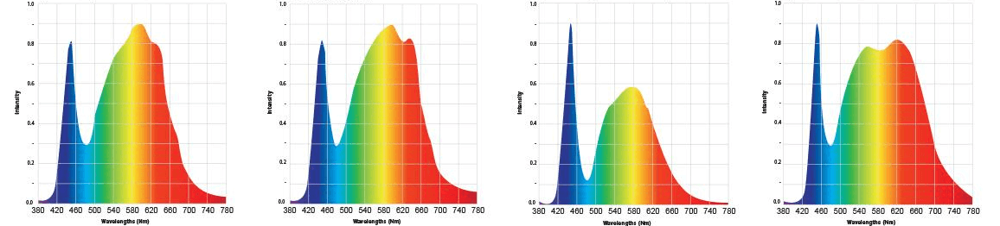

Instructions on how to grow plants
Temperature
Relative Humidity
Carbon Dioxide
Temperature
Electro Conductivity
Minerals and Soluble Nutrients
pH
Intensity
Wavelength
Correlated Color Temperature
Germination
Seedling
Vegetative
Flowering
What is the recipe structure all about?
Now that we've discussed the different metric types, and potential growth stages, we can organize this into recipe.
But first we need a baseline..
Each recipe includes a default stage for defining default metrics.
Metrics can be defined by a tolerable range or precise value.
<recipe>
<default>
<air>
<temperature min="18" max="24" />
</air>
<water>
<ph min="6.8" max="6.8" />
</water>
</default>
</recipe>
Each additional stage builds upon the Default stage. We only include the metrics that are different.
<recipe>
<default>
<air>
<temperature min="18" max="24" />
</air>
<water>
<ph min="6.8" max="6.8" />
</water>
</default>
<vegetative>
<air>
<temperature min="12" max="15" />
</air>
</vegetative>
</recipe>
We can also specify time intervals for how long a Stage should last.
Or a stage can be defined further into day or night phases, for example.
<recipe>
<default>
<air>
<temperature min="18" max="24" />
</air>
<water>
<ph min="6.8" max="6.8" />
</water>
</default>
<!-- 7 days -->
<vegetative duration="604800">
<air>
<temperature min="12" max="15" />
</air>
</vegetative>
</recipe>
Temperatures should be in the range of 65 F. (18 C.) or more indoors
Flowering will be promoted by warmer temperatures and best growth is from 75 to 85 F. (24-29 C.)
<recipe>
</recipe>
Text cited from bonnieplants.com
One of the most popular open standards for text data
Supported by many programming langauges
Has rich schema support (XSL, RELAX NG)
A schema is a lexicon that's used to validate a recipe.
It determines what is or isn't a metric, and the 'grammar' for how recipes are structured.
It can determine an invalid recipe..
<notagreatrecipe>
<default>
<air>
<butterflies min="more than five" max="many" />
</lava>
<moons>
<bananas min="6.8" max="sandwiches" />
</moons>
</def>
</notagreatrecipe>
..from a valid one
<recipe>
<default>
<air>
<temperature min="18" max="24" />
</air>
<water>
<pH min="6.8" max="7.25" />
</air>
</default>
</recipe>
Content should be propietarty,
not the content's format.
$ git checkout -b higher-temp-test
$ vim recipe.xml
$ git add recipe.xml
$ git commit -m "increase air temperature"
$ git checkout master
$ git merge higher-temp-test
Adaptation
Fill out a survey
Fork the repository
Try it out yourself!